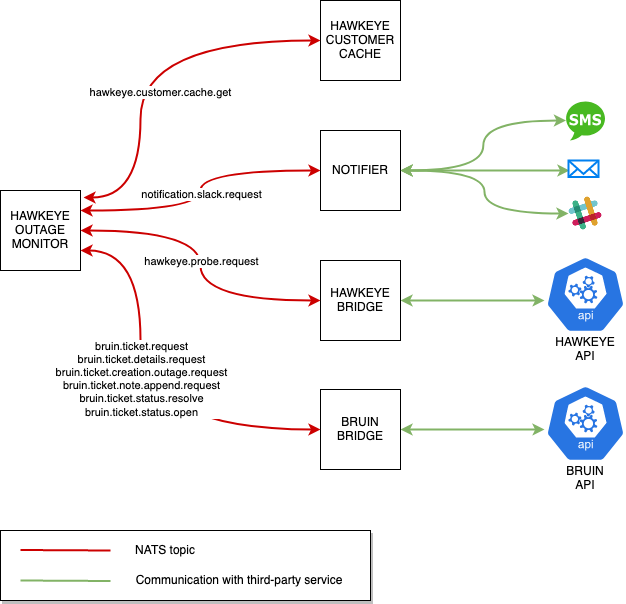

System overview
Architecture
Basic concepts
It is a project based on microservices, in which two types are distinguished:
- Capabilities: They are in charge of carrying out certain common actions for the business logic. I.e.: Collect information from SD-WAN routers
For example: Collect information from SD-WAN routers.
- Use cases: They use capabilities as a base to make specific use cases. I.e.: Obtain certain tickets from SD-WAN routers of a company, obtaining the information from the routers for the subsequent storage in the corresponding tickets.
For example: Obtain certain tickets from SD-WAN routers of a company, obtaining the information from the routers for subsequent storage in the corresponding tickets.
It is important to emphasize on the architecture of the system the use of NATS in it.
Messaging system
It is important to emphasize in the architecture of the system the use of NATS in it.
-
NATS is a simple, secure and performant communications system for digital system, services and devices
-
NATS is used in the microservices system as a communication center for all of them.
NATS it is used in cluster mode to satisfy more work to be done by it due to the high number of events in the system to be processed
Microservices communications
There are two types of microservices depending on the connection between them and NATS:
-
Microservices that communicates with NATS, divided into three types:
-
Those that take the role of
replierin the context of NATS, usually microservices that contains capabilities:bruin-bridgects-bridgehawkeye-bridgelit-bridgeemail-bridgenotifications-bridget7-bridge
-
Those that take the role of
requesterin the context of NATS, usually microservices that contains use cases:dispatch-portal-backendgrafanacomponent, frommetrics-prometheusmicroservicehawkeye-affecting-monitorhawkeye-outage-monitorlast-contact-reportservice-affecting-monitorservice-dispatch-monitorservice-outage-monitortnba-feedbacktnba-monitor
-
Those that take the role of both
requesterandreplierin the context of NATS. These microservices can be considered a mixture between use use cases and capabilities:customer-cachehawkeye-customer-cache
It is important take into account that all microservices that communicate with NATS can also communicate with the Redis Cluster. This is needed to bypass the limit size that NATS enforces for all messages it receives (1MB).
-
-
Microservices that does not communicate with NATS:
dispatch-portal-frontendlumin-billing-reportprometheusandthanoscomponents, frommetrics-prometheusmicroserviceredis cluster(Docker container in local environment or an Elasticache Redis Cluster in AWS environments)
NATS is used in the microservice system as a communication center for all of them. It is used in cluster mode to satisfy more work to be done by it.
In the following diagram is possible see a graph with the relationships between the microservices explained previously in this section

Relationships between microservices
The services that are part of the previously explained architecture are related to each other, in the following diagram is possible see the relationships between them.

Capabilities microservices
Bruin-bridge microservice
This microservice is in charge of making requests to the bruin API, taking the role of replier in the context of NATS.
When another microservice requests bruin data, it will be in charge of making response messages to the same and never of request, that is to say, it will always be a producer within a NATS topic and never a consumer.
Bruin is a third-party system that allows creating and managing support tickets to deal with issues that appear in network devices, among other types of devices.
The following diagram shows the dependencies or interactions of this microservice with the others, being in this case none, since it is in charge of one of the isolated microservices as explained above.

Cts-bridge microservice
This microservice is in charge of making requests to the CTS API, taking the role of replier in the context of NATS.
When another microservice requests CTS data, it will be in charge of making response messages to the same and never of request, that is to say, it will always be a producer within a NATS topic and never a consumer.
The following diagram shows the dependencies or interactions of this microservice with the others, being in this case none, since it is in charge of one of the isolated microservices as explained above.

Digi-bridge microservice
This microservice is in charge of making requests to the Digi Reboot API, taking the role of replier in the context of NATS.
When another microservice asks to reboot a SD-WAN device, it will be in charge of making response messages to the same and never of request, that is to say, it will always be a producer within a NATS topic and never a consumer.
The following diagram shows the dependencies or interactions of this microservice with the others, being in this case none, since it is in charge of one of the isolated microservices as explained above.

Hawkeye-bridge microservice
This microservice is in charge of making requests to the Hawkeye API, taking the role of replier in the context of NATS.
When another microservice requests Hawkeye data, it will be in charge of making response messages to the same and never of request, that is to say, it will always be a producer within a NATS topic and never a consumer.
The following diagram shows the dependencies or interactions of this microservice with the others, being in this case none, since it is in charge of one of the isolated microservices as explained above.
{kind=link}
Lit-bridge microservice
This microservice is in charge of making requests to the LIT API, taking the role of replier in the context of NATS.
When another microservice requests LIT data, it will be in charge of making response messages to the same and never of request, that is to say, it will always be a producer within a NATS topic and never a consumer.
The following diagram shows the dependencies or interactions of this microservice with the others, being in this case none, since it is in charge of one of the isolated microservices as explained above.

Email bridge microservice
This microservice is in charge of sending emails.
It is important to point out that it is not in charge of the composition of the messages to be sent, that is to say, of their content, but only of sending them.
The following diagram shows the dependencies or interactions of this microservice with the others, being in this case none, since it is in charge of one of the isolated microservices as explained above.
{kind=link}
Notifications bridge microservice
This microservice is in charge of sending notifications to third-party systems.
It is important to point out that it is not in charge of the composition of the messages to be sent, that is to say, of their content, but only of sending them.
The following diagram shows the dependencies or interactions of this microservice with the others, being in this case none, since it is in charge of one of the isolated microservices as explained above.
{kind=link}
T7-bridge microservice
The function of this microservice is to embed in the notes of a ticket the prediction calculated by T7, this prediction will store information on the recommendations actions for the ticket.
In order to carry out the mentioned actions, it communicates with the API of T7 to obtain the information about the prediction, as it can be seen in the following diagram.

Velocloud-bridge microservice
This microservice is in charge of making requests to the velocloud API, taking the role of replier in the context of NATS.
When another microservice requests velocloud data, it will be in charge of making response messages to the same and never of request, that is to say, it will always be a producer within a NATS topic and never a consumer.
The following diagram shows the dependencies or interactions of this microservice with the others, being in this case none, since it is in charge of one of the isolated microservices as explained above.

Use cases microservices
Dispatch-portal-backend microservice
In conjunction with dispatch-portal-frontend, this service provides MetTel the ability to track the status of dispatch requests,
as well as create and update them, so their technicians can assist customers when they report any issue related to a device.
It also updates Bruin tickets to keep support people posted about the changes in the dispatch requests.
It acts as an intermediary between dispatch-portal-frontend and CTS & LIT APIs by providing a REST API with multiple endpoints
that, once they receive a payload from the frontend side, it modifies its fields with the help of some mappers to match the formats expected
by CTS and LIT and then forward those customized payloads to their APIs.
The following diagram shows the dependencies or interactions of this microservice with the others.

Grafana microservice
Although Grafana is a visualization tool for metrics, it needs to fetch some data from VeloCloud API to build dashboards for customer Titan America.
The following diagram shows the dependencies or interactions of this microservice with the others.
{kind=link}
Hawkeye-outage-monitor microservice
This service is responsible for resolving/unresolving outage tickets depending on the state of a Hawkeye device. It is triggered every 3 minutes.
If a device is detected to be in outage state then it is scheduled for a recheck in the next 5 seconds. If the device is still in outage state, the system will try creating a new outage ticket. If Bruin reports back that an outage ticket with Resolved status exists already then it is unresolved; if not, a new outage ticket may have been created or an outage ticket with In Progress status may exist already, so no additional action will be taken.
In case the device was detected to be healthy, the system looks for an open outage ticket for this device and resolves it in case it exists.
In the following diagram is possible see the relationship of this microservice with the others. 
{kind=link}
Last-contact-report microservice
The function to be performed by this microservice is to send a monthly report with information about routers that were last contacted more than 30 days ago.
The following flow is used to make this report:
-
The last-contact-report microservice communicates with the velocloud-bridge microservice to obtain events from an edge.
-
Once the events are obtained from an edge, it communicates with the email-bridge microservice to send an email with this information.
It is possible to see the relations between the mentioned services for the flow in the following diagram.

Service-affecting-monitor microservice
In this microservice are defined a series of scales and thresholds, the function of this will be to check if there is loss of packages, latencies or jitter measurements that exceed the thresholds defined.
In case the thresholds are exceeded, it will communicate with the email-bridge service to send a notification by email and the notifications service to send a notification by slack, by means of which it will warn of the problems detected on a specific edge.
This microservice also communicates with the bruin-bridge microservice to create tickets or add notes to an existing one, including in this information about the routers for which a problem is detected.
In the following diagram is possible see the relationships between this microservice and the others.

Service-dispatch-monitor microservice
This microservice monitor dispatches statuses for different vendors, at the time of writing this document LIT and CTS. Both processes are pretty much the same in concept but with differences in the implementation.
A dispatch is general terms can have the following statuses:
- Requested
- Confirmed
- Tech on site
- Canceled
- Completed
The main use is to monitor:
- Dispatch status changed
- Updates in the dispatch like the technician
- Send sms prior 2 and 12 hours before
- Send sms tech on site
- Cancel dispatch
The basic algorithm behaves like this:
- Get all dispatches for a vendor
- Filter dispatches that are created through the
dispatch-portal - Discard invalid ticket ids or dispatches with not proper fields
- Split the dispatches by status and then send them to the function to process them, there are 3 general functions
- Confirmed dispatch:
- Send sms and append note to bruin when a dispatch is confirmed
- Send sms and append note to bruin 12 or 2 hours prior the dispatch
- Send sms and append note to bruin when a tech has changed
- Tech on site dispatch:
- Send sms and append note to bruin when tech on site
- Canceled dispatch:
- Append note to bruin when a dispatch is canceled
- Confirmed dispatch:
Each vendor has its own details like how to retrieve some fields or how we identify the tickets with the dispatches, all explained in the service-dispatch-monitor.
In the following diagram is possible see the relationships between this microservice and the others.

Service-outage-monitor microservice
This microservice orchestrates the execution of two different processes:
- Outage monitoring. This process is responsible for resolving/unresolving outage tickets depending on the state of an edge. It is triggered every 3 minutes.
If an edge is detected to be in outage state then it is scheduled for a recheck in the next 5 seconds. If the edge is still in outage state, the system will try creating a new outage ticket. If Bruin reports back that an outage ticket with Resolved status exists already then it is unresolved; if not, a new outage ticket may have been created or an outage ticket with In Progress status may exist already, so no additional action will be taken.
In case the edge was detected to be healthy, the system looks for an open outage ticket for this edge and resolves it in case it exists.
- Triage. This process is aimed at updating Bruin tickets with information related to recent edge events. It is triggered every 10 minutes.
At the beginning, the process gathers all the open tickets related with the companies that are under triage monitoring. Tickets not related with edges belonging to these companies are discarded before going on.
The process starts dealing with every ticket in the set collected in the previous step: * If the outage ticket does not have any triage note from a previous execution of the triage process then a triage note is appended with information of the events related to the edge corresponding to this ticket. Events correspond to the period between 7 days ago and the current moment. If the current environment is DEV instead of PRODUCTION then no note is appended to the ticket; instead, a notification with a summary of the triage results is delivered to a Slack channel.
- If the outage ticket already has a triage note from a previous execution then the process attempts to append new triage notes to the ticket but only if the last triage note was not appended recently (30 minutes or less ago). In case there's no recent triage note, edge events from the period between the creation date of the last triage note and the current moment are claimed to Velocloud and then they are included in the triage notes, which are finally appended to the ticket. Note that due to Bruin limitations it is not feasible to have a triage note with 1500 characters or more; that is the reason why several triage notes are appended to the ticket (instead of just appending one).
In the following diagram is possible see the relationship of this microservice with the others.

TNBA-feedback microservice
This microservice is in charge of collecting closed tickets that had a TNBA note appended by tnba-monitor at some point. After collecting them, they are sent to t7-bridge to retrain predictive models and hence improve
the accuracy of predictions claimed by tnba-monitor.
The following diagram shows the relationship between this microservice and the others.
{kind=link}
TNBA-monitor microservice
This microservice is in charge of appending notes to Bruin tickets indicating what is The Next Best Action a member of the support team of Bruin can take to move forward on the resolution of the ticket.
It mostly communicates with bruin-bridge and t7-bridge to embed predictions into tickets, but it also communicates with other capabilities as shown in the following diagram.
The following diagram shows the relationship between this microservice and the others.

Special microservices (NATS Requester and Replier)
Customer-cache microservice
This microservice is in charge of crossing Bruin and Velocloud data. More specifically, it focus on associating Bruin customers with Velocloud edges. On the other hand, it also serves this information to the rest of services.
This service is a special one, since it acts as a requester (to build and store caches) but also as a replier (to serve caches to services requesting them).
The following diagram shows the dependencies or interactions of this microservice with the rest.

From the point of view of services to the left of customer-cache, it plays the role of a replier as it answers to requests sent by them.
From the point of view of services to the right of customer-cache, it plays the role of a requester as it asks for data to Velocloud and Bruin to cross it.
Hawkeye-customer-cache microservice
This microservice is in charge of crossing Bruin and Hawkeye data. More specifically, it focus on associating Bruin customers with Hawkeye devices. On the other hand, it also serves this information to the rest of services.
This service is a special one, since it acts as a requester (to build and store caches) but also as a replier (to serve caches to services requesting them).
The following diagram shows the dependencies or interactions of this microservice with the rest.

From the point of view of services to the left of hawkeye-customer-cache, it plays the role of a replier as it answers to requests sent by them.
From the point of view of services to the right of hawkeye-customer-cache, it plays the role of a requester as it asks for data to Hawkeye and Bruin to cross it.
Microservices that do not communicate with NATS
dispatch-portal-frontend
In conjunction with dispatch-portal-backend, this service provides MetTel the ability to track the status of dispatch requests,
as well as create and update them, so their technicians can assist customers when they report any issue related to a device.
It exposes a UI that communicates directly with a REST API in dispatch-portal-backend to handle the visualization, creation and
update of dispatch requests.
The following diagram shows the relationship between this microservice and dispatch-portal-backend.

lumin-billing-report
This service automates requesting billing information for a given customer from the Lumin.AI service provider, generating a summary HTML email and attaching a csv with all data for the current billing period.
This service is self-contained, i.e., it does not require access to NATS or Redis, or any other microservice within the Automation Engine.
The following diagram shows the relationship between this service and the third-party services it uses.
{kind=link}
Prometheus & Thanos
The purpose of Prometheus is to scrape metrics from HTTP servers placed in those services with the ability to write metrics, nothing else.
Thanos is just another component that adds a layer of persistence to Prometheus, thus allowing to save metrics before they are lost when a service is re-deployed. These metrics can be restored after the deployment completes.
Metrics are usually displayed in a Grafana instance with a few custom dashboards.
The following diagram shows the relationship between Prometheus, the metrics servers it scrapes metrics, and Grafana.

Redis
Redis is an in-memory key-value store that, in this system, is used mostly for caching purposes, and also as a temporary storage for messages larger than 1 MB, which NATS cannot handle by itself.
There are three Redis instances: * redis. Used to store NATS messages larger than 1 MB temporarily. All microservices that communicate with NATS in some way have the ability to store and retrieve messages from this Redis instance.
-
redis-customer-cache. Used to turn
customer-cacheandhawkeye-customer-cacheinto fault-tolerant services, so if any of them fail caches will still be available to serve as soon as they come back. -
redis-tnba-feedback. Used to collect huge amounts of Bruin tickets' task histories before they are sent to T7 by the
tnba-feedbackservice.
Technologies and tools
Code repository
-
Intelygenz's Gitlab is used to store the project's code
-
Gitlab CI is used as the CI/CD tool for the project
Containerization
The following containerization tools are used:
-
Docker is used to create o container of this type by microservice > In the folder of each microservice there is a
Dockerfilethat allows to execute that microservice as a container -
Docker-compose is used for defining and running project microservices as a multi-container Docker application: > At the root of the repository there is a
docker-compose.ymlfile that allows to run one or more microservices as docker containers
Infrastructure
Microservices Infrastructure
For the microservices ECS is used to deploy a container for each microservice for all environments deployed, as each one has its own repository in the ECR registry used in the project.
In the following diagram is possible see how the microservices of the project are deployed, using the different images available in the registry created for the project in ECR.

KRE Infrastructure
In this project KRE is used, it has been deployed in an Kubernetes cluster using EKS for each of the necessary environments, as well as all the parts needed for this in AWS.
In the following diagram is possible see how is configured the KRE infrastructure in the project.

Network infrastructure
For the infrastructure of the network resources there is a distinction according to the microservice environments and also the kre-environmetns to deploy belongs to dev or production.
In the following diagram is possible see the infrastructure relative to the existing network resources in AWS created for the two type of environments.

When deploying an environment it will use the resources belonging to the environment type. This approach has been implemented so that regardless of the number of ECS clusters being used, the same public IPs are always used to make requests outward from the different environments. KRE's clusters will also use the VPCs corresponding to each environment, i.e., dev or production.